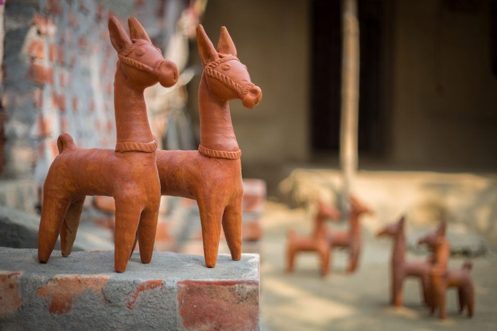

About Uttar Dinajpur
The District of Uttar Dinajpur came into existence on 1st April 1992 after the bifurcation of the erstwhile
West Dinajpur District
for proper administrative convenience. Uttar Dinajpur is well connected with the rest of the State
through National Highways,State Highways and Railways.
The regional topography is generally flat with a gentle southernly slope towards which the main rivers like Kulik, Nagar,
Mahananda etc flow.
